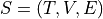
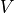
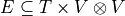
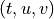
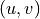
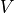
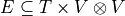
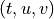
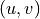

Datasets
For the benchmark, we make available three types of datasets. Each dataset is made of a linkstream , where
 is a set of time instants,  is a set of nodes, and  is a set of links, such that  means that link between nodes  happens at time .
is a set of time instants,  is a set of nodes, and  is a set of links, such that  means that link between nodes  happens at time .
Raw Datasets
Datasets that are publicly available, that we distribute with limited modifications. For most of them, we only update the format to homogenize them.
Mawi: packet transfers via upd or tcp
Taxi : taxi trips in new york, on a grid
Peru : money transfer in peru during an extreme weather event
Bitcoin : bitcoin money transfer
Data-Model Datasets
Using some properties extracted from the previous datasets (degree sequences, weight sequences, timeseries), we generate random “normal” and “anomaly” graphs, and random “normal” and “anomaly” timeseries.
To generate the graphs, we use a Havel-Hakimi generator, followed by random edge swap, to generate the random graph using the degree sequences, and distribute the weights at random over the edges.
To generate the timeseries, we keep the timestamps and shuffle the values over the timestamps.
Random-Model Datasets
Finally, we distribute datasets generates from scratch using generation models.
For graphs, we use an Erdos-Renyi model to generate the “normal” and “anomaly” graphs. We then distribute the weights uniformly such that the sum of the weights is the number of interactions set as input.
For timeseries, we use randomly uniformly distribute the values such that the cumulative sum reaches the number of interactions set as input.